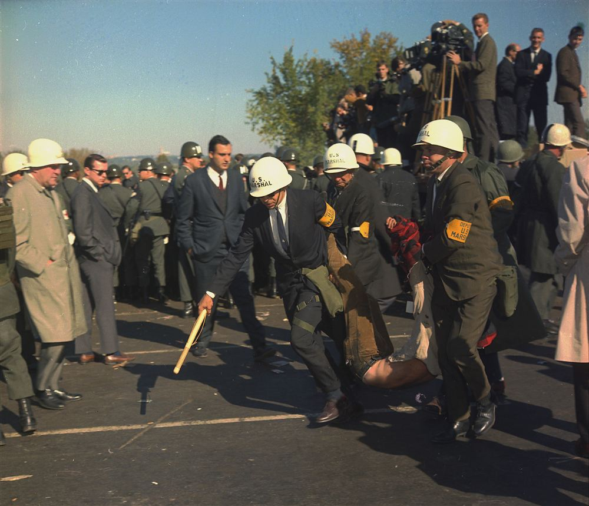

Meoncross School | History Department
Edition 2026.1
Civil Rights and the Vietnam War: How did social and foreign crises transform the USA?
Paper 3: Conflict at Home and Abroad: the USA, 1954–75 - Key Topic 4: Reactions to, and the end of, US involvement in the Vietnam War, 1964–75
PROGRESS & ASSESSMENT TRACKER Target Grade: _________
| Level |
Emerging (1-2) |
Emerging+ (3) |
Expected (4-5) |
Expected+ (6-7) / Greater Depth (8-9) |
| Lesson / Assessment Title |
Effort |
Level |
Teacher Comments |
| L1: KT 4.1: Why did so many Americans oppose the Vietnam War (like at My Lai and Kent State)? | | | |
| L2: KT 4.2: Why did some Americans support the Vietnam War and the 'Silent Majority'? | | | |
| L3: KT 4.3: How did the US exit Vietnam, and why did South Vietnam fall so quickly in 1975? | | | |
| L4: KT 4.4: What were the main reasons why the US failed to win the war in Vietnam? | | | |
| Final Unit Grade: |
|
|
|
L1: KT 4.1: Why did so many Americans oppose the Vietnam War (like at My Lai and Kent State)?
Learning Objectives
Demonstrate comprehensive historical knowledge of the key developments and figures in KT 4.1: Why did so many Americans oppose the Vietnam War (like at My Lai and Kent State)?.
Analyse conflicting motivations, tactics, and responses of groups and individuals involved in the crisis.
Evaluate competing historical interpretations and source evidence to construct reasoned causal judgments for Paper 3.
Do Now Activity
Score: / 5
What was President Nixon's policy of 'Vietnamization'?
Why did Nixon order the invasion of Cambodia in 1970?
Why did Operation Lam Son 719 in Laos fail?
Which laws enforced racial segregation and discrimination in the Southern states in the 1950s?
What does the abbreviation NAACP stand for?
Vocabulary Check
Write a short paragraph using at least THREE of the vocabulary words below correctly.
Kent State University | Lieutenant William Calley | Kent State University | Students for a Democratic Society (SDS) | Draft card burning
Knowledge Check (Q1)
What heavy protest action did thousands of young American men perform with their draft registration cards?
- A. Publicly burned them in street rallies
- B. Mailed them to North Vietnam
- C. Traded them for Canadian currency
- D. Pawned them to buy guns
Think-Pair-Share: Q2 How did televised media coverage of events like the My Lai Massacre affect public trust in the US military?
| 1. My Thoughts (Think) |
2. Partner's Thoughts (Pair) |
|
|
Knowledge Check (Q3)
Who was the only US military officer convicted of murder for the My Lai Massacre of 500 Vietnamese civilians?
- A. Lieutenant William Calley
- B. General William Westmoreland
- C. Captain Ernest Medina
- D. Secretary Robert McNamara
Knowledge Check (Q4)
How many unarmed students were shot and killed by National Guardsmen at Kent State University on May 4, 1970?
- A. 4 students
- B. 10 students
- C. 1 student
- D. 20 students
Pair & Share Activity
Q5. Prompt: Why did testimonies from returning veterans like Ron Kovic have such a powerful emotional and political impact on the American public compared to student protests?
Think: Reflect on the evidence presented in the narrative, primary sources, and scholarly perspectives.
Active Tasks
Q6. Give two things you can infer from Source A about the Kent State shootings. (4 marks)
Q7. How did televised media coverage of events like the My Lai Massacre affect public trust in the US military?
Q8. Why did the shooting of four students at Kent State University in 1970 trigger a nationwide student strike?
Historian's Corner: ⚖️ Dual Interpretation: The Anti-War Movement
Q9. Which historical interpretation provides a more convincing explanation of developments in KT 4.1: Why did so many Americans oppose the Vietnam War (like at My Lai and Kent State)??
Edexcel GCSE Paper 3: 8-Mark Source Utility Assessment
Source A
Source A: From a photograph showing U.S. Marshals carrying away an anti-war demonstrator outside the Pentagon, October 1967.
[A photograph showing two U.S. Marshals wearing white helmets carrying away a civilian demonstrator, while media reporters and cameras watch in the background.]
Source B
Source B: From a photograph showing student demonstrators facing the National Guard at Kent State University, May 1970.
[A photograph showing a crowd of college students gathered on a campus lawn. In the distance, a line of National Guard soldiers in gas masks and helmets is aimed toward them, holding rifles.]
Provenance Scaffolding:Scaffolding Clue: Evaluate the author, audience, and motive for both sources. For written accounts, consider if the author has political reasons to justify their actions. For photographs, consider what may be excluded outside the camera's frame.
Scaffolding & Hints:- Content (Utility): What specific details in each source answer the enquiry? Support this with your own historical knowledge.
- Provenance (Author, Motive, Date): Who created the source, why did they produce it, and does this increase or limit its utility?
- Comparative Judgment: Clearly weigh up the relative strengths and limitations of both sources to reach a balanced conclusion.
Q10. How useful are Sources A and B for an enquiry into the anti-war movement and the response of the government?
[8 marks • 10 mins]
🗣️ Pupil Voice
What was the most significant event or decision in today's lesson, and what was its major historical consequence?
L2: KT 4.2: Why did some Americans support the Vietnam War and the 'Silent Majority'?
Learning Objectives
Demonstrate comprehensive historical knowledge of the key developments and figures in KT 4.2: Why did some Americans support the Vietnam War and the 'Silent Majority'?.
Analyse conflicting motivations, tactics, and responses of groups and individuals involved in the crisis.
Evaluate competing historical interpretations and source evidence to construct reasoned causal judgments for Paper 3.
Do Now Activity
Score: / 5
Why did the My Lai Massacre in 1968 shock the American public?
What happened during the protests at Kent State University in 1970?
Why did the conscription (draft) system cause anger among young Americans?
Which laws enforced racial segregation and discrimination in the Southern states in the 1950s?
What does the abbreviation NAACP stand for?
Vocabulary Check
Write a historically accurate sentence connecting two terms from the glossary box below.
Silent Majority | Hard Hat Riots | Credibility gap | 1968 | Walter Cronkite
Your Sentence:Knowledge Check (Q1)
What Cold War fear motivated ordinary Americans to support the military campaign in Vietnam?
- A. Fear of the global spread of communism ('The Red Scare')
- B. Fear of European economic domination
- C. Desire to colonize Southeast Asia
- D. Fear of Japanese invasion
Think-Pair-Share: Q2 Who did Nixon mean by the 'Silent Majority', and how did he use them to politically counter the anti-war movement?
| 1. My Thoughts (Think) |
2. Partner's Thoughts (Pair) |
|
|
Knowledge Check (Q3)
What term did President Nixon popularize in a November 1969 speech to describe everyday Americans who supported the war quietly?
- A. The 'Silent Majority'
- B. The 'Moral Majority'
- C. The 'Real Americans'
- D. The 'Hard Hats'
Knowledge Check (Q4)
What did the trade union construction workers who attacked student anti-war protesters in New York City become known as?
- A. The 'Hard Hats'
- B. The 'Dixiecrats'
- C. The 'Green Berets'
- D. The 'White Guards'
Pair & Share Activity
Q5. Prompt: How did the anti-war movement create deep social and class divisions in American society? How did Nixon capitalize on these divisions?
Think: Reflect on the evidence presented in the narrative, primary sources, and scholarly perspectives.
Active Tasks
Q6. Explain why some Americans supported US involvement in the Vietnam War in the years 1969–72. (12 marks)
Q7. Who did Nixon mean by the 'Silent Majority', and how did he use them to politically counter the anti-war movement?
Q8. What did the 'Hard Hat Riots' of 1970 reveal about class divisions within the American home front?
Historian's Corner: ⚖️ Dual Interpretation: Nixon's Silent Majority Appeal
Q9. Which historical interpretation provides a more convincing explanation of developments in KT 4.2: Why did some Americans support the Vietnam War and the 'Silent Majority'??
Edexcel GCSE Paper 3: 8-Mark Source Utility Assessment
Source A
Source A: From a photograph of pro-war demonstrators at a rally in support of US troops, New York City, 1970.
[A photograph of citizens holding large US flags and signs reading 'Support Our President', 'Silent Majority Speaks', and 'Victory Over Communism in Vietnam'. They look patriotic and orderly.]
Source B
Source B: A photograph showing construction workers marching during the Hard Hat Riots in New York City, May 1970.
[A photograph showing thousands of construction workers wearing hard hats marching down a street. They are carrying American flags and banners reading 'USA All the Way' and cheering.]
Provenance Scaffolding:Scaffolding Clue: Evaluate the author, audience, and motive for both sources. For written accounts, consider if the author has political reasons to justify their actions. For photographs, consider what may be excluded outside the camera's frame.
Scaffolding & Hints:- Content (Utility): What specific details in each source answer the enquiry? Support this with your own historical knowledge.
- Provenance (Author, Motive, Date): Who created the source, why did they produce it, and does this increase or limit its utility?
- Comparative Judgment: Clearly weigh up the relative strengths and limitations of both sources to reach a balanced conclusion.
Q10. How useful are Sources A and B for an enquiry into the views of the 'Silent Majority' and support for the Vietnam War?
[8 marks • 10 mins]
🗣️ Pupil Voice
What was the most important change that occurred during this period, and what remained continuous (the same)?
L3: KT 4.3: How did the US exit Vietnam, and why did South Vietnam fall so quickly in 1975?
Learning Objectives
Demonstrate comprehensive historical knowledge of the key developments and figures in KT 4.3: How did the US exit Vietnam, and why did South Vietnam fall so quickly in 1975?.
Analyse conflicting motivations, tactics, and responses of groups and individuals involved in the crisis.
Evaluate competing historical interpretations and source evidence to construct reasoned causal judgments for Paper 3.
Do Now Activity
Score: / 5
Who did President Nixon call the 'Silent Majority'?
Why did some Americans support US involvement in Vietnam?
What happened during the 'Hard Hat Riots' in New York City?
Which laws enforced racial segregation and discrimination in the Southern states in the 1950s?
What does the abbreviation NAACP stand for?
Vocabulary Check
Write a clear definition and a historically accurate sentence for the term: 1973
Knowledge Check (Q1)
Who served as President Nixon's National Security Advisor and chief negotiator at the secret Paris peace talks?
- A. Henry Kissinger
- B. Robert McNamara
- C. Dean Rusk
- D. William Westmoreland
Think-Pair-Share: Q2 Why did historians argue that the Paris Peace Accords of 1973 were designed to create a 'decent interval'?
| 1. My Thoughts (Think) |
2. Partner's Thoughts (Pair) |
|
|
Knowledge Check (Q3)
What critical concession did the US make in the 1973 Paris Accords that sealed South Vietnam's eventual downfall?
- A. Allowing 150,000 North Vietnamese troops to remain inside South Vietnam
- B. Surrendering the city of Saigon immediately
- C. Paying $50 billion in war reparations to Hanoi
- D. Disarming the South Vietnamese military
Knowledge Check (Q4)
On what date did Saigon fall to North Vietnamese forces, ending the Vietnam War and reunifying the country under communism?
- A. April 30, 1975
- B. January 27, 1973
- C. July 4, 1976
- D. November 22, 1963
Pair & Share Activity
Q5. Prompt: How does this eyewitness account challenge the idea that the US exit from Vietnam was an orderly, honorable retreat? What was the human cost of the sudden withdrawal?
Think: Reflect on the evidence presented in the narrative, primary sources, and scholarly perspectives.
Active Tasks
Q6. How useful are Sources B and C for an enquiry into the fall of Saigon in 1975? (8 marks)
Q7. Why did historians argue that the Paris Peace Accords of 1973 were designed to create a 'decent interval'?
Q8. What did the iconic image of the helicopter evacuation of the Saigon embassy in 1975 symbolize to the world?
Historian's Corner: ⚖️ Dual Interpretation: The Paris Peace Accords (1973)
Q9. Which historical interpretation provides a more convincing explanation of developments in KT 4.3: How did the US exit Vietnam, and why did South Vietnam fall so quickly in 1975??
Edexcel GCSE Paper 3: 8-Mark Source Utility Assessment
Source A
Source A: From a photograph showing the signing of the Paris Peace Accords, 27 January 1973.
[A photograph showing foreign ministers and diplomats sitting around a massive circular table in a grand room in Paris. Several cameras are flashing as they sign the official treaty documents.]
Source B
Source B: A photograph showing the evacuation of the US embassy in Saigon, 29 April 1975.
[A photograph showing a long line of people climbing a ladder onto the roof of a building adjacent to the US embassy to board a CIA Huey helicopter. Thick smoke rises in the distance.]
Provenance Scaffolding:Scaffolding Clue: Evaluate the author, audience, and motive for both sources. For written accounts, consider if the author has political reasons to justify their actions. For photographs, consider what may be excluded outside the camera's frame.
Scaffolding & Hints:- Content (Utility): What specific details in each source answer the enquiry? Support this with your own historical knowledge.
- Provenance (Author, Motive, Date): Who created the source, why did they produce it, and does this increase or limit its utility?
- Comparative Judgment: Clearly weigh up the relative strengths and limitations of both sources to reach a balanced conclusion.
Q10. How useful are Sources A and B for an enquiry into the peace process and the final withdrawal of the US from Vietnam?
[8 marks • 10 mins]
🗣️ Pupil Voice
How did the events or developments studied today affect different groups of people in contrasting ways?
L4: KT 4.4: What were the main reasons why the US failed to win the war in Vietnam?
Learning Objectives
Demonstrate comprehensive historical knowledge of the key developments and figures in KT 4.4: What were the main reasons why the US failed to win the war in Vietnam?.
Analyse conflicting motivations, tactics, and responses of groups and individuals involved in the crisis.
Evaluate competing historical interpretations and source evidence to construct reasoned causal judgments for Paper 3.
Do Now Activity
Score: / 5
What did the Paris Peace Accords of 1973 agree?
Why did US forces withdraw from Vietnam in 1973?
What happened during the Fall of Saigon in April 1975?
Which laws enforced racial segregation and discrimination in the Southern states in the 1950s?
What does the abbreviation NAACP stand for?
Vocabulary Check
Write a short paragraph using at least THREE of the vocabulary words below correctly.
Soviet Union and China | 19 | Fragging | 250 kilometers | Ho Chi Minh Trail
Knowledge Check (Q1)
Which two major communist superpowers provided crucial military hardware, anti-aircraft missiles, and financial aid to North Vietnam?
- A. The Soviet Union (USSR) and China
- B. Cuba and North Korea
- C. France and Britain
- D. East Germany and Poland
Think-Pair-Share: Q2 Why was the US military unable to defeat an enemy that fought using asymmetric guerrilla warfare?
| 1. My Thoughts (Think) |
2. Partner's Thoughts (Pair) |
|
|
Knowledge Check (Q3)
What slang term referred to disgruntled US enlisted soldiers attempting to assassinate their own unpopular officers with grenades?
- A. 'Fragging'
- B. 'Drafting'
- C. 'Sniping'
- D. 'Zippoing'
Knowledge Check (Q4)
What 1973 federal law restricted the US President's ability to commit armed forces to foreign conflicts without congressional approval?
- A. The War Powers Act (1973)
- B. The Gulf of Tonkin Resolution
- C. The Patriot Act
- D. The Marshall Plan
Pair & Share Activity
Q5. Prompt: Why is it possible to win every military battle but still lose a war? How does this sum up the core failure of the US intervention in Vietnam?
Think: Reflect on the evidence presented in the narrative, primary sources, and scholarly perspectives.
Active Tasks
Q6. Why was the US military unable to defeat an enemy that fought using asymmetric guerrilla warfare?
Q7. How did the economic cost of the war ('Guns and Butter') weaken the US home front?
Historian's Corner: ⚖️ Dual Interpretation: Reasons for US Defeat in Vietnam
Q8. Which historical interpretation provides a more convincing explanation of developments in KT 4.4: What were the main reasons why the US failed to win the war in Vietnam??
Edexcel GCSE Paper 3: 16-Mark Judgment Essay
Scaffolding & Hints:- Formulate a clear thesis in your introduction that directly answers the question.
- Examine Vietcong guerrilla tactics (ambushes, booby traps, Cu Chi tunnels, blending with peasants) vs US tactical failures (search-and-destroy, firepower reliance).
- Examine alternative factors: US home front collapse (anti-war protests, media coverage, Tet Offensive), ARVN weakness and political corruption in Saigon, and North Vietnamese resolve (Ho Chi Minh trail, Soviet/Chinese aid).
- Provide a sustained, justified judgment in your conclusion.
Q9. 'The main reason the United States failed to win the Vietnam War was the military effectiveness of Vietcong guerrilla tactics.' How far do you agree with this statement? + 4 SPaG)
You may use the following in your answer:
- Vietcong guerrilla tactics and tunnel networks
- The domestic anti-war movement and the 'credibility gap'
You must also use information of your own.
[16 marks • 20 mins]
🗣️ Pupil Voice
What piece of historical evidence (e.g. government record, personal diary, photograph) would be most valuable to investigate today's enquiry, and why?
End of Unit Reflection & Pupil Voice
Unit: this unit
Instructions: Now that you have completed your final assessment, take 10 minutes to reflect on your learning across this entire unit. Be honest—this is your chance to use your Pupil Voice to help your teacher plan future lessons.
1. What Went Well (WWW)
What topic or skill did you find most engaging or easiest to understand in this unit?
2. Even Better If (EBI)
What did you find most challenging? Are there any concepts you are still confused about?
3. Effort & Target Setting
Circle your effort level for this unit: 1 (Low) 2 3 4 5 (Excellent)
What is one specific target you want to set for yourself in the next unit?
Teacher Feedback & Coaching
(To be completed during live marking / feedback lessons)
Generated: 2026-09-11 15:43:50 UTC | Unit: usa | Edition: 2026.1